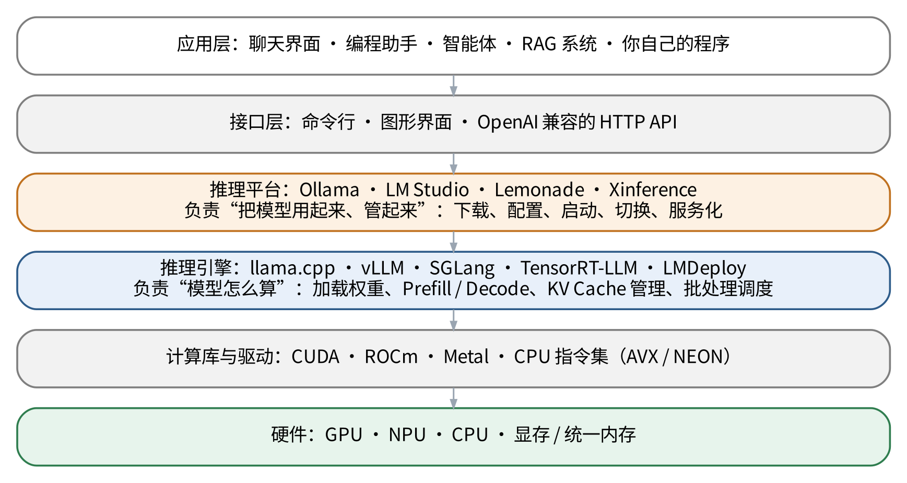

3.10 推理引擎、平台与模型部署
前面几节讨论的推理原理和优化技术，最终都要落实到具体的软件中。本节介绍把模型真正运行起来所涉及的软件栈：推理引擎、推理平台，以及模型文件的组成，最后讨论如何根据场景选择部署方案。
3.10.1 推理引擎与推理平台
在大模型推理的软件栈中（图 3-27），有两类容易混淆的软件：
- 推理引擎（Inference Engine）负责运行模型，解决”模型怎么算”的问题：加载权重、管理运行数据，调用硬件完成预填充和解码；
- 推理平台（Inference Platform）负责把模型用起来、管起来，解决”用户怎么方便地使用模型”的问题：模型从哪里下载、怎样启动和切换、其他程序如何调用，都可以通过平台完成，使用者不必逐项处理底层细节。

图3-27 大模型推理的软件栈
可以打个比方：推理引擎是汽车的发动机，决定了车能跑多快；推理平台是整辆车的驾驶舱和仪表盘，决定了开起来是否方便。一个平台通常建立在一个或多个引擎之上。需要强调的是，平台不会给模型增加任何知识或能力，它只是省去了大量的配置和管理工作。
3.10.2 推理引擎的职责
一个推理引擎主要完成以下三方面的工作。
（1）模型加载：读懂文件，安排存放位置。 引擎需要识别模型结构、读取权重，并为运行过程准备内存。模型是全部由 GPU 计算，还是部分交给 CPU，取决于引擎的支持情况和硬件配置。模型文件下载完成后，还要确认引擎能否识别它的模型结构、文件格式和量化方式，三者缺一不可。
（2）预填充与解码：调用合适的计算方式。 用户输入的问题首先被分词器转换成 Token。预填充阶段集中处理输入 Token，解码阶段根据已有上下文继续生成。引擎在这两个阶段为不同的硬件选择合适的计算内核、安排计算顺序、分配临时空间，并管理 KV Cache 等运行数据。
（3）多请求调度：减少排队和资源闲置。 如果十个人同时提问，引擎要决定如何把这些请求组织成批、何时把新请求插入、显存不够时先处理谁、是否复用相同前缀的 KV Cache 等。3.9 节介绍的连续批处理、PagedAttention、前缀缓存等技术，都在这一层实现。
表 3-18 列出了几种常用的推理引擎。
表3-18 常用的推理引擎
| 引擎 | 开发方 | 主要特点 | 典型场景 |
|---|---|---|---|
| llama.cpp | 开源社区 | C/C++ 实现，依赖少；支持 CPU、苹果 Metal、CUDA、Vulkan 等多种后端，支持部分层卸载；使用 GGUF 格式和丰富的量化类型 | 个人电脑、边缘设备 |
| vLLM | 加州大学伯克利分校发起的开源项目 | PagedAttention、连续批处理、张量并行；支持多种量化格式；提供 OpenAI 兼容接口 | 高吞吐的在线服务 |
| SGLang | 开源社区（LMSYS 等） | RadixAttention 前缀缓存、结构化输出，调度高效 | 高并发服务、智能体与多轮对话 |
| TensorRT-LLM | NVIDIA | 针对 NVIDIA GPU 深度优化的编译内核，支持 FP8 等低精度 | NVIDIA 数据中心部署 |
| LMDeploy | 上海人工智能实验室 | TurboMind 推理内核，量化与服务一体 | 国内模型的服务化部署 |
| MLX | 苹果 | 面向苹果芯片统一内存架构的数组计算框架 | Mac 本地推理与微调 |
3.10.3 推理平台
推理平台负责模型下载、参数配置和服务启动。用户可以通过聊天窗口、命令行或 API 使用模型。常见的本地推理平台有：
- Ollama：把下载模型、运行模型和接口调用整合在一起。用户既可以通过应用界面或命令行与模型对话，也可以让自己的程序调用它在本地提供的服务。例如，一条命令
ollama run qwen2.5:7b就能自动下载并运行一个 7B 模型。 - LM Studio：通过可视化的桌面界面使用本地模型，集成了模型搜索、下载、聊天和参数设置等功能，也能向其他应用提供 API。
- Lemonade：在同一个本地服务中统一管理模型和多种推理后端，既可以通过 llama.cpp 执行推理，也可以调用 NPU 等其他硬件后端。
- Xinference：面向团队和企业的模型服务平台，支持语言、嵌入、图像等多种模型的统一部署和分布式运行。
目前，大多数引擎和平台都提供与 OpenAI API 兼容的接口。这意味着，同一段调用代码只需修改服务地址，就可以在云端 API、本地 Ollama 和自建的 vLLM 服务之间切换。例如，用 vLLM 启动一个服务，再用 HTTP 请求调用它：
# 启动服务（默认监听 8000 端口）
vllm serve Qwen/Qwen2.5-7B-Instruct --max-model-len 8192
# 调用 OpenAI 兼容的对话接口
curl http://localhost:8000/v1/chat/completions \
-H "Content-Type: application/json" \
-d '{"model": "Qwen/Qwen2.5-7B-Instruct",
"messages": [{"role": "user", "content": "什么是 KV Cache？"}],
"temperature": 0.7, "max_tokens": 512}'请求中的 temperature、max_tokens 等参数，正对应 3.8.6 节介绍的解码策略。
3.10.4 模型文件
1．模型仓库中有什么
从 Hugging Face、ModelScope 等模型仓库下载模型时，通常会得到一个文件夹，其中可能包含：一个或多个权重文件、模型结构与运行配置、分词器及其配置，多模态模型还会有图像或音频的预处理配置。以一个 7B 指令模型为例：
Qwen2.5-7B-Instruct/
├── config.json # 模型结构：层数、隐藏维度、注意力头数、KV 头数等
├── generation_config.json # 默认的解码参数
├── model-00001-of-00004.safetensors # 权重分片 1
├── model-00002-of-00004.safetensors # 权重分片 2
├── model-00003-of-00004.safetensors # 权重分片 3
├── model-00004-of-00004.safetensors # 权重分片 4
├── model.safetensors.index.json # 索引：每个参数存放在哪个分片中
├── tokenizer.json # 分词器的词表与合并规则
└── tokenizer_config.json # 分词器配置，包括对话模板（Chat Template）权重太大时会被拆分为多个分片，这些分片合在一起才是一套完整的模型，并不是每个文件都能单独运行。不同框架需要的文件也不完全相同。只复制一个权重分片，或者直接修改文件后缀，通常都得不到一套能运行的模型。config.json 中记录的层数、KV 头数等信息，正是 3.8.3 节估算 KV Cache 大小所需的参数。
2．常见的权重文件格式
表3-19 常见的模型权重文件格式
| 格式 | 扩展名 | 特点 | 主要使用者 |
|---|---|---|---|
| PyTorch 原生格式 | .bin / .pt | 基于 Python 的 pickle 序列化，加载时可能执行任意代码，存在安全风险 | 早期的模型仓库 |
| Safetensors | .safetensors | 只存储张量数据，加载安全、速度快，支持内存映射 | Hugging Face 生态、vLLM 等 |
| GGUF | .gguf | 单个文件同时包含权重、模型结构、分词器和对话模板等元数据，内置多种量化类型 | llama.cpp、Ollama、LM Studio |
| ONNX | .onnx | 跨框架、跨硬件的通用计算图格式 | ONNX Runtime、端侧与 NPU 部署 |
3．读懂模型文件名
模型文件名通常包含了选型所需的关键信息。以 Qwen2.5-7B-Instruct-Q4_K_M.gguf 为例：Qwen2.5 是模型系列和版本；7B 是参数规模；Instruct 表示经过指令微调和对齐的对话模型（不带此后缀或带 Base 的通常是基础模型，不适合直接对话）；Q4_K_M 是 llama.cpp 的一种 4 位混合量化类型，平均每个权重约 4.8 位；.gguf 是文件格式。
3.10.5 部署方案的选择
1．能不能跑：显存估算
判断一个模型能否在某台设备上运行，可以用下面的经验公式粗略估算所需显存（或统一内存）：
\(M_{\text{推理}} \approx \underset{\text{权重}}{\underbrace{N \times p_{w}}} + \underset{\text{式(3-40)}}{\underbrace{M_{KV}}} + \underset{\text{激活值与框架开销}}{\underbrace{(10\% \sim 20\%) \times \left( \text{前两项之和} \right)}}\quad\) (3-51)
其中 \(N\) 为参数量，\(p_{w}\) 为每个权重占用的字节数（参见表 3-16）。
【例 3-8】 一位同学想在 16 GB 统一内存的笔记本上运行 Qwen2.5-7B-Instruct 的 Q4_K_M 量化版本（文件约 4.7 GB），上下文长度设为 8192。已知该模型有 28 层、4 个 KV 头、每头维度 128，KV Cache 以 FP16 存储。估算所需内存。
解： 权重约 4.7 GB。每个 Token 的 KV Cache 为 \(2 \times 28 \times 4 \times 128 \times 2 = 57344\) 字节，约 56 KB；8192 个 Token 共约 0.47 GB。按 15% 估算其他开销约 0.8 GB。合计约 6 GB，远小于 16 GB，可以流畅运行，还能留出内存给操作系统和其他程序。如果改用 FP16 原始精度，仅权重就需要约 15 GB，就很难运行了。
2．跑在哪里：部署场景
表 3-20 比较了几种典型的部署方案。
表3-20 大模型部署方案的比较
| 部署方案 | 典型工具 | 适用的模型与精度 | 优点 | 局限 |
|---|---|---|---|---|
| 个人电脑本地运行 | Ollama、LM Studio、llama.cpp | 数十亿参数的模型，4～8 位量化 | 数据不出本机、可离线、零调用费用 | 模型规模和并发能力有限 |
| 单机服务器 | vLLM、SGLang、LMDeploy | 数十亿到数百亿参数，BF16 / FP8 / INT4 | 支持多用户并发，可提供 API | 需要购置和运维 GPU 服务器 |
| 多机集群 | vLLM、SGLang、TensorRT-LLM 的分布式部署 | 千亿参数级别，张量并行 + 流水线并行，PD 分离 | 能运行最大的模型，吞吐量高 | 成本和工程复杂度最高 |
| 调用云端 API | 各模型厂商的开放平台 | 最强的闭源与开源模型 | 无需硬件，即开即用 | 按 Token 计费，数据需发送给服务方 |
选择部署方案时，需要综合考虑模型规模（需要多聪明）、并发量与时延要求（服务多少人、多快响应）、数据安全（数据能否离开本地）和成本（购买硬件还是按量付费）。对于学习和个人使用，在本地电脑上用 Ollama 或 LM Studio 运行一个量化后的 7B 左右模型，是了解大模型推理最便捷的起点。